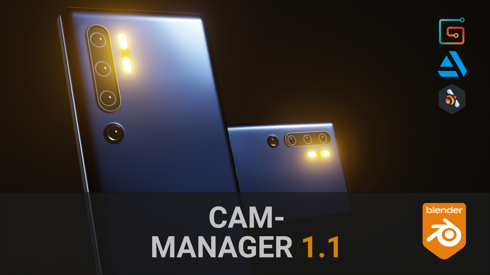

Overview

What is Cam-Manager?
Cam-Manager is an addon to organize scene cameras and tweak their settings directly from the 3D view. The mission of this addon is to bring all camera-related relevant settings and information as close to the user as possible. Camera handling should become as simple and fast as using a smartphone camera.
Feature Overview
- View all cameras and common camera settings at a glance: Compare different camera settings when doing your adjustments or when renaming your cameras.
- Toggle Cameras with hotkeys (default: Ctrl + Shift + Arrow Left/Right) and from the different addon overview panels.
- Slick and efficient UI
- Camera Resolution: Assign different resolutions to each camera
-
Lock/Unlock Camera: Lock/Unlock all camera transformations instantly from both the overview panel or pie menu
-
Render Slots: Assign different render slots to different cameras to avoid overwriting other camera renders.
-
Camera Collection: Create or specify an existing camera collection to easily assign individual or all cameras to it. Keep them organized in the Outliner and quickly hide/show all of them.
-
Background Image Settings: Toggle the background image on/off, adjust opacity or change the render order directly from the 3D view (Pie menu).
-
Resolution from Background Image: Set the camera resolution from the camera background image.
-
World Material: Assign different world materials per Camera.
- Exposure: Compensate lighting intensity changes from cameras by assigning a camera-specific exposure value.
- Change hotkeys to your likings from the addon preferences.

Why Cam-Manager?
Stay Organized: See all the cameras and their most important values at one glance and adjust the values if needed.
Quick: All the functionality is at your fingertips and can be accessed from the 3D View. No need to scroll through different windows and panels. Find all the relevant information at one spot. No need to scan through different menus and windows.
Easy to use: The overview panel is a simple and well-structured spreadsheet and the operators are self-explanatory, with additional descriptions, if needed.
Continuous Support: The addon is well documented. All buttons, tools, and values have useful description texts when hovering. Development is still ongoing. Share your feedback, opinions, use-cases, needs and help me to improve the tool even further.
Behind the curtain
Blender stores the current resolution, exposure, and world material as global value in the scene and not as components of the camera. When switching the camera, the addon will set the current scene values to those stored per camera by the addon. This works perfectly when switching cameras with the tools provided by this addon. It will not work when changing the camera manually or when using other addons. This is unfortunately a limitation coming from blender implementation of cameras.

Due to this limitation in the blender architecture, it is not possible to preview multiple cameras with different resolutions at the same time.
Download and Installation
Please purchase the Cam-Manager from any of the provided stores. The addon can be installed by going to File > User Preferences > addons. Click at Install from File and specify the downloaded zip file in the newly opened window. Cam-Manager should now appear in your addons window and can be activated. Please contact me in case you run into any issues here.

Once installed, you can use the auto-updater in the user preferences to get the latest version of the addon.